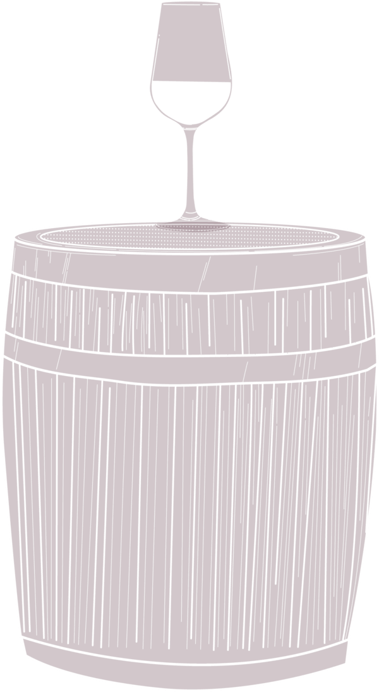
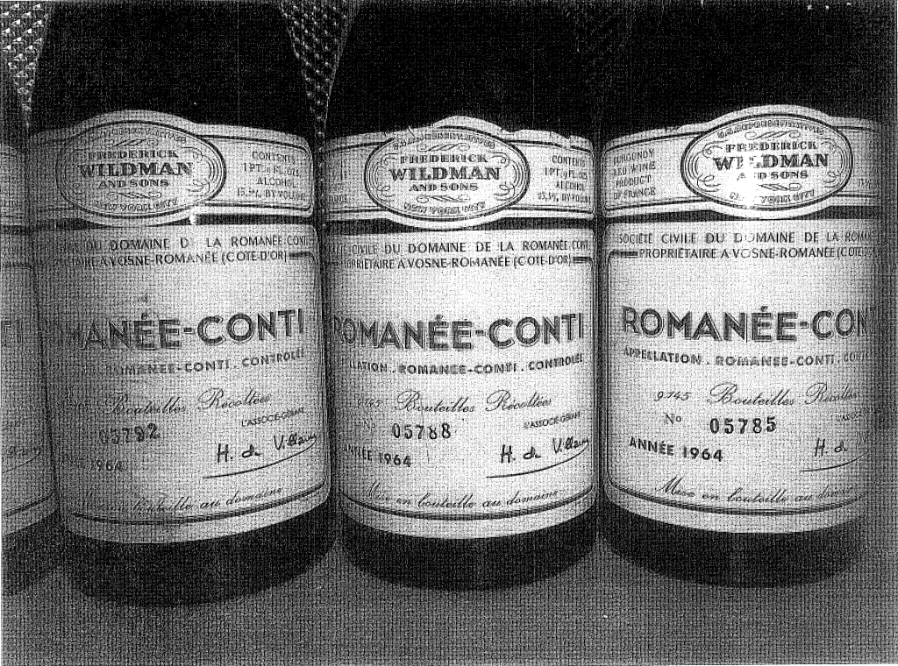
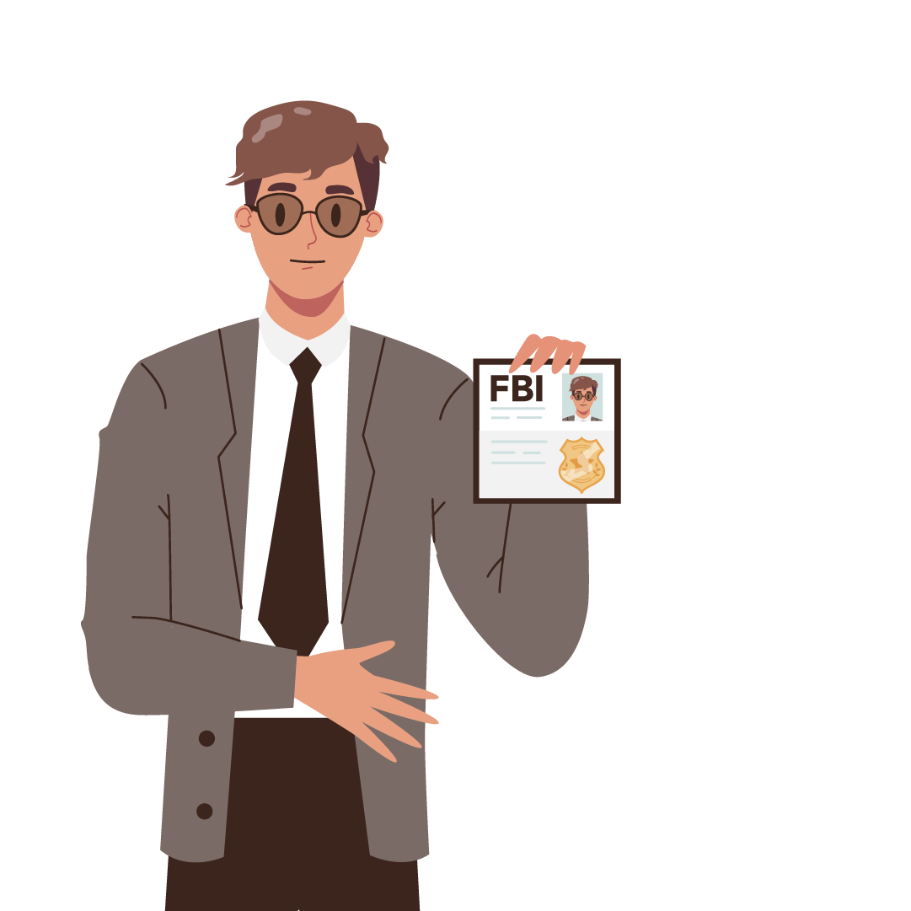

Rudy Kurniawan pernah mengegerkan para pecinta wine dunia. Dia berhasil menipu dan memalsukan wine langka selama 8 tahun dengan keuntungan US$ 150 juta.

Geger Wine Oplosan Rudy di Amerika

Sosok Rudy Kurniawan sempat menggegerkan dunia pecinta minuma anggur (wine) langka pada 2012. Pria yang memiliki nama asli Zen Wang Huang kelahiran Jakarta, 10 Oktober 1976, ditangkap Biro Penyelidik Federal Amerika Serikat atau Federal Bureau of Investigasion (FBI) karena mengoplos minuman wine senilai US$ 150 juta atau Rp 2,410 triliun (asumsi kurs dolar hari ini Rp 16.069, red) dari 2004 hingga 2012.
Versi lain menyebutkan, minuman wine oplosannya masih beredar hingga 2016 di sejumlah toko secara eceran. Diperkirkan nilainya mencapai US$ 550 juta atau Rp 8,902 triliun terhitung sejak 2004 hingga 2016.

Kisah kejahatan Rudy Kurniawan menjadi inspirasi dalam film dokumenter berjudul ‘Sour Grapes’ besutan Jerry Rothwell dan Reuben Atlas yang tayang di Netflix pada 2016. Rudy yang juga dijuluki ‘Dr Conti’, karena kecintaannya pada Domaine de la Romanee-Conti, perkebunan anggur paling terkenal dan tua di Burgundy, Perancis.
Burgundy terkenal sebagai produsen langka sejak abad ke-13, seperti La Tache, Richebourg, Ramonee St-Vivant, Grands Echezaux dan Montracet. La Tache dan Richebourg merupakan salah satu produk yang dipalsukan Rudy. Ini belum termasuk produk lainnya, seperti Clos de la Roche dan Clos Saint Denis.
Selain di film Sour Grapes , di dalam buku ‘Vintage Crime: A Short History of Wine Fraud’ karya Rebecca Grib (2023) disebutkan, Rudy berasal dari keluarga keturunan Tionghoa kaya yang menjalankan bisnis distribusi bir di Indonesia. Dia juga tercatat sebagai keponakan dua tokoh koruptor besar, yaitu Eddy Tansil dan Hendra Raharja.

Seperti diketahui, Eddy Tansil yang bernama asli Tan Tjoe Hong/Tan Tju Fuan menjadi terpidana korupsi Bank Pembangunan Indonesia (Bapindo) senilai US$ 565 juta (Rp 9,078 triliun). Eddy Tansil divonis penjara 20 tahun, tapi berhasil kabur dari Lembaga Pemasyarakatan (LP) Cipinang, Jakarta Timur, pada 1996. Sampai sekarang dia masih menjadi buronan pemerintah Indonesia.
Sedangkan Hendra Raharja (Tan Tjoe Hing) terjerat kasus korupsi Bantuan Likuiditas Bank Indonesia (BLBI) senilai Rp 2,659 triliun antara 1992-1996. Saat diadili di Pengadilan Negeri Jakarta Pusat, pemilik Bank Harapan Sentosa (BHS) dan Bank Guna Internasional (BGI) itu buron pada 2002. Dia divonis hukuman seumur hidup, tapi ditemukan tewas di negeri kangguru, Australia pada 26 Januari 2003.


Nama Rudy mulai menggemparkan dunia pecinta wine antara 2006 hingga 2007. Kala itu Rudy tengah menetap di negara bagian yang dijuluki ‘The Golden State’, California. Dia dituduh memalsukan wine-wine langka dan dijual kepada para pengusaha kolektor wine langka di Amerika, Inggris dan negara lainnya.

Barang bukti wine oplosan Rudy
Foto:
The Guardian
Barang bukti label wine palsu.
Foto:
AFP_Getty Images
Gabus tutup botol dan label wine palsu.
Foto:
Stan Honda_AFP
“Fenomena wine palsu ini sudah ada sejak tahun 2007. Rudy tersangkut kasus yang sama tahun 2006. Ini dulu gempar di dunia,” kata seorang sumber yang dikenal dekat dengan Rudy Kurniawan kepada detikcom pada Jumat, 9 Maret 2012.
Rudy sudah dikenal sebagai kolektor wine langka sejak umurnya masih muda. Orang tak menyangka dengan perawakannya yang ramping, berkacamata minus serta wajah kekanak-kanakan sebagai penipu. Diakui sumber tersebut, Rudy sudah tergila-gila mengoleksi wina langka yang mahal sejak muda.

Rudy Kurniawan dalam sebuah lelang wine
Foto:
New York Post
Koleksi wine langka yang dikumpulkannya itu kembali dijual melalui rumah lelang dengan harga dua kali lipat atau lebih. "Selain beli dia juga mulai menjual. Yang dia jual itulah beberapa dianggap palsu sehingga dituntut, salah satunya yang terakhir ini oleh Koch," jelas sumber detikcom tersebut.
Meski dituntut melelang wine palsu, Rudy tetap bisa membela diri dan bebas. Masih menurut sumber tersebut, Rudy bersikukuh bahwa minuman wine yang dinilai palsu itu dibeli juga dari rumah lelang. "Dia menyalahkan rumah lelangnya. Karena dia beli juga dari rumah lelang," pungkas sumber tersebut.
Gugatan penipuan yang dilakukan Rudy dilayangkan oleh miliarder Amerika Serikat bernama William 'Bill' Koch melalui pengacaranya Bruce A Wessel ke Pengadilan Tinggi California wilayah Los Angeles pada 10 September 2009. Dalam berkas gugatan seperti dilansir dari The New York Times, 9 Maret 2012, Rudy tercatat sebagai warga Indonesia yang masuk ke AS dengan visa pelajar pasca meletus kerusuhan Mei 1998.
Rudy sempat meminta suaka politik kepada pemerintah AS, namun ditolak pada 2001. Lalu Rudy mengajukan banding permohonan tersebut, lagi-lagi upayanya upayanya itu ditolak. Malah otoritas pengadilan di AS memberikan batas waktu agar Rudy mendeportasi dirinya sendiri hingga 2003.
Alih-alih pulang, Rudy malah nekad menetap di California secara ilegal. Saat itu Rudy tengah belajar di California State Northridge. Dia bisa bertahan hidup berkat dukungan finansial keluarga kayanya di Jakarta. Sejak 2004, Rudy mulai berkenalan dengan komunitas pecinta wine.
Dia berkenalan dengan anak orang kaya asal Perancis bernama Paul Wasserman. Keduanya berkolaborasi membangun gudang penyimpanan di kawasan 5800 West Third Street, Los Angeles. Tak lama keduanya mengubah gudang penyimpanan menjadi The Wine Hotel, sebagai kiblat bagi para pecinta dan kolektor wine.
Karena berbakat dalam bisnis penjualan wine langka, belum lagi uang pemberian keluarganya di Indonesia, gaya hidup Rudy bak sultan. Dia sering terlihat mondar-mandir menggunakan mobil mewah seperti Lamborgini, berpakaian branded dan jam tangan mahal.
Rudy sering mengadakan pesta dengan mencicipi minuman wine langka dan legendaris di beberapa tempat di New York dan California. Salah satunya di Restauran Cru di New York dengan mencicipi 1945 Maouton Rotschild, 1961 Jaboulet Hermitahe La Chapelle, 1971 La Tache, 1964 Romanee-Conti dan 1978 Guigal Cote-Rotie La Mouline.
Rudy selalu membayar semua pesta itu dengan kartu kreditnya. Dia mendekati karyawan restaurant agar mau mengumpulkan serta mengirim botol kosong wine langka itu ke rumahnya di kawasan Arcadia, Los Angeles. Di gudang bawah tanah rumahnya, Rudy meracik formula wine sendiri. Rudy dikenal sebagai tester berbagai minuman wine yang handal.

Bukti botol dan merk wine yang dipalsukan Rudy.
Foto:
Justice Gov
Wine racikannya dimasukan ke dalam botol-botol kosong dan diberi stempel, merek dan busa penutup baru. Seolah-olah, botol minuman itu baru dan berisi minuman langka. Botol-botol wine itu kembali dikirim ke rumah lelang untuk dijual dengan harga tinggi.
Rudy berhasil mengelabui pengusaha kaya kolektor wine. Salah satu pengusaha yang berhasil ditipunya adalah William Koch, mantan tentara Angkatan Laut AS. Dia membeli 219 botol wine milik Rudy senilai Rp 2,1 juta (Rp 33,744 miliar) dari rumah lelang Acker Merral & Condit. Rumah lelang memang tak menyebutkan sumber asal botol wine yang dijual karena terkait materi promosi dan iklan.
Hanya saja, berdasarkan investigasi yang dilakukan William Koch, ratusan botol wine milik Rudy ternyata palsu. Rudy diketahui mengantongi izin lisensi menjual wine secara eceran dari Departemen Pengendalian Alkohol Negara Bagian California atau State of California Department of Alcohol Beverage Control (ABC).
Majalah LA Times pada Oktober 2008 menggambarkan Rudy sebagai ‘kolektor Burgundy di dunia’. Sementara situs In & Around Los Angeles menyebutkan The Wine Hotel yang dikelola Rudy dan Paul sebagai gerai ‘hight recommended’ bagi para pecinta wine. Tempat itu membuka jasa layanan penyimpanan wine dengan suhu yang sudah dikontrol dengan baik.

William Koch lalu mengadukan temuan botol wine langka palsu milik Rudy itu kepada rekan senior di tim khusus FBI yang bermarkas di New York. Tim ini terbiasa memangani kejahatan di bidang barang kesenian, barang antik dan koleksi khusus lainnya. Tim ini melakukan penyamaran dalam penyelidikan kasus Rudy selama 4 tahun.
Akhirnya tiba waktunya, tim FBI mengerebek rumah Rudy di Arcadia, Los Angeles pada 8 Maret 2012. Rudy pun ditangkap atas tuduhan pemalsuan minuman wine tersebut. Di gudangnya ditemukan sekitar 19.000 label botol wine palsu yang mewakili 27 wine terbaik di dunia.
FBI juga menyita ratusan botol kosong, busa sumbat dan perangko. Rudy mungkin telah berhasil menjual 12 ribu botol wine palsu melalui sejumlah rumah lelang, sisanya mungkin berada di tangan para kolektor atau pecinta wine langka lainnya.
Penyidik FBI seperti dilansir The New York Times, 9 Maret 2012, mengatakan, keberhasilan pengungkapan kasus penipuan Rudy karena beberapa kesalahan sepele yang dibuat pria berumur 35 tahun tersebut. Salah satunya adalah tentang botol-botol anggur produk Domaine Ponsot yang coba dilelangnya pada tahun 2008.
Wine tersebut dikatakan Rudy dibuat pada tahun 1929. Padahal perusahaan pembuat anggur itu baru memulai proses pembotolan anggur pada 1934. Akhirnya saat itu sebanyak 84 botol wine Domaine Ponsot ditarik dari sebuah rumah lelang. Pada Februari 2012, sebanyak 78 botol wine palsu Burgundy dari Domaine de la Romanee-Conti ditarik dari rumah lelang.
Jaksa penuntut umum di Pengadilan Federal New York menuntut Rudy terlibat ‘dalam berbagai skema penipuan terkait bisnis anggurnya’. Rudy juga dianggap menipu dalam bentuk skema pinjaman uang untuk mengembangkan wine kepada para kolektor.
Pengadilan New York akhirnya menjatuhi vonis 10 tahun penjara kepada Rudy pada 2013. Dia juga diganjar harus membayar ganti rugi sebesar US$ 28,4 juta kepada tujuh kolektor yang menjadi korbannya, plus menganti kerugian materiil para korbannya sebesar US$ 20 juta.
Setelah mendekam di penjara Reeves County, Pecos, Texas, selama 7 tahun, Rudy dibebaskan bersyarat pada 2020. Setelah menghirup udara bebas, petugas Badan Bea Cukai dan Penegakan Imigrasi AS atau US Immigration and Costum Enforcemen (ICE) mendeportasi Rudy yang saat itu sudah berumur 44 tahun ke Indonesia.

USA


Indonesia
Rudy diterbangkan langsung dari Bandara Internasional Dallas/Fort Wort menuju Bandara Soekarno-Hatta, Tangerang, Banten pada 9 Maret 2021. Sejak jejak dan aktivitas Rudy di Indonesia tidak diketahui secara pasti.
Penulis:
M. Rizal Maslan
Editor:
M. Rizal Maslan
HTML:
Dedi Arief Wibisono
Ilustrasi:
Edi Wahyono